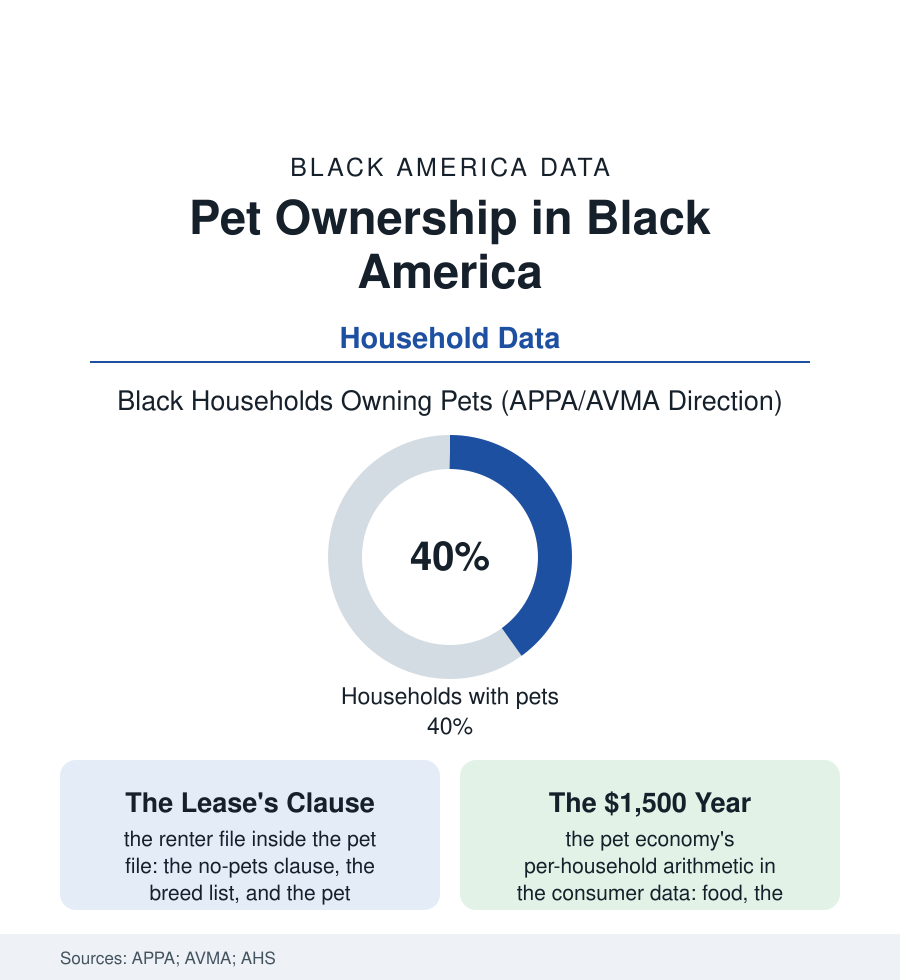

Black Census
The Pet File: Black America and Its Animals
Two in five Black households keep pets — fewer than the national rate, for reasons the housing file explains — in a $150-billion economy whose data are only now learning to see them. The pet file.

The pet economy is one of America's largest consumer industries, and its household data carry a racial signature the industry spent decades not measuring: Black households keep pets at rates below the national average — roughly two in five against three in five — a gap that turns out, in the housing and income data, to be substantially a story about leases, yards, and the price of a vet visit. This article reads the pet file.
The Dog, the Lease, and the Yard
The ownership tables sort first by species and circumstance: dogs lead in Black households as nationally (the dog's share of the pet population highest in the house-and-yard rows of the American Housing Survey's cross-tabs), cats and fish and birds following at lower rates, the whole distribution bending around the housing file's central variable — the tenure line. The renter's pet is a negotiated animal: the no-pets clause's prevalence in the lease data, the pet deposits and monthly pet rents of the corporate-landlord era, the breed restrictions of the insurance file shadowing specific dogs out of specific buildings, the public-housing pet rules of the housing-authority data — the renting population's pet rate in the surveys running far below the owner's, and Black America's renter share doing the arithmetic the culture-war readings skip. The second variable is the yard itself, and behind it the suburbanization file: the pet rate's climb along the same gradient as the single-family move, the Black suburban household's dog arriving, in the APPA panels, at rates converging toward the national figure — the gap's residue, in the market researchers' segmentation, increasingly generational and cultural rather than economic (the younger cohorts of every ancestry converging on the dog-as-family-member model the industry's premium tiers are built on: the fresh food, the insurance policy, the daycare webcam — the pet-industrial complex's fastest-growing customer rows including, in the recent panels, the Black millennial household at rates their grandparents' data would not predict).
One historical row belongs in the file for scale: the dog in Black American life predates the pet economy by the whole history — the hunting and farm dogs of the rural record, the protection dogs of the urban twentieth century, the fighting-dog economy's grim column in the animal-cruelty data (a column the cruelty statutes' enforcement patterns make impossible to read innocently in either direction) — against which the modern panels' portrait, the insured and daycare'd family dog, measures a genuine transformation in the household's margin and self-image within two generations.
The Working and Healing Animals
The file's serious columns stand beside the consumer data: the service animal's rows (the guide and mobility dogs of the disability file, the psychiatric service animals of the veterans' data — the trained dog as medical equipment the payment systems argue about), the emotional-support era's documentation debates in the housing file (the letter that obliges the landlord against the no-pets clause, the airlines' policy reversals, the legislature's tightening definitions), and the profession's mirror — the veterinary workforce of the health file's thinnest shelf (Black veterinarians at a few percent of the profession in the AVMA data, the Tuskegee veterinary school's outsized share of them — one HBCU producing a remarkable fraction of the nation's Black animal doctors, its admissions file a pipeline study in itself), the Black-owned pet businesses of the business file behind them (the groomers, boarders, trainers, and boutique brands of the pet economy's small-business shelf). The human data close the ledger: the pet's measured place in the Black household's emotional economy — the elder's cat in the aging file's loneliness data, the child's first responsibility in the family file's accounts, the bereavement the grief literature only lately dignified with studies. Forty percent and climbing, then: a population the industry undercounted discovering, in the consumer panels' own belated arithmetic, that it had been a market all along — one dog, one lease negotiation, one vet-school seat at a time.
Reading the Pet Data
The pet file is the census section's softest data and some of its most revealing: what a household feeds that did not have to be fed is a pure readout of its slack, its space, and its heart. APPA publishes the rates. The rest is published nightly, at walking hour, on every block of the atlas — leash in hand, bag in pocket, two in five and rising.
More in Black Census
The Black Population of the United States: Size, Definitions, and Distribution
The Black population of the United States totals 52.8 million — 15.4 percent of the nation. How the Census Bureau defines and counts the population, and where it lives.
Black Median Household Income in the United States
Black median household income stands at $56,490 in the Census Bureau's annual income report — how the figure is measured, how it compares, and what drives it.
The Black Poverty Rate: Levels, Children, and the Long Trend
The official Black poverty rate is 17.1 percent — against 11.1 percent nationally and 7.7 percent for non-Hispanic White Americans. How poverty is measured and what the data show.
Source: American Pet Products Association National Pet Owners Survey; American Veterinary Medical Association pet ownership statistics; U.S. Census Bureau American Housing Survey; Packaged Facts consumer research.